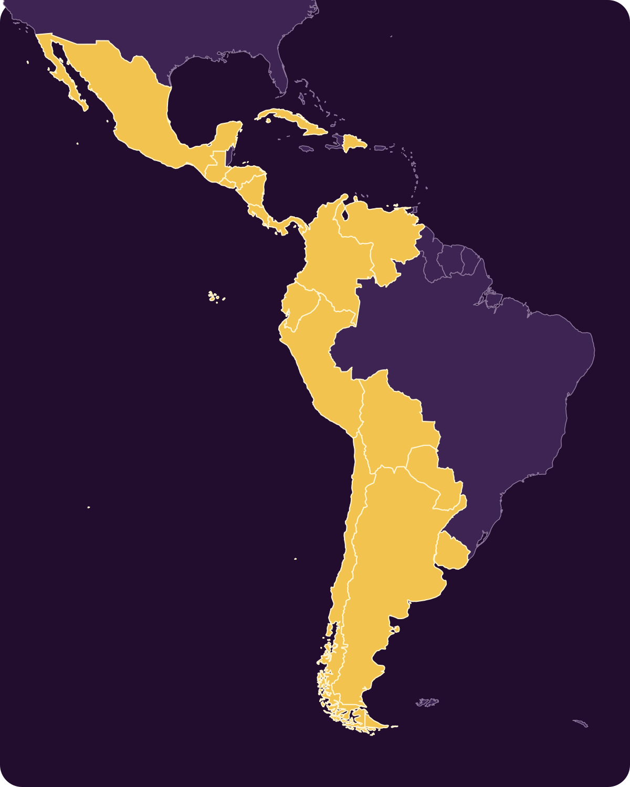

Una comunidad que convierte ideas en trabajo visible.
Cada proyecto muestra su problema, responsables, etapa, evidencia, próximos hitos y
decisiones pendientes. Cualquier persona puede seguirlo; la comunidad podrá apoyar
prioridades y contribuir de manera concreta.
Un asistente con fuentes verificadas para entender derechos, trámites, acuerdos y oportunidades regionales.
Ruta 03 · AbrirÚltima nota: definición del problema
Issue #7En ejecución
Infraestructura abierta
Centro de documentación
Un lugar público y buscable para entender las reglas, los proyectos, el rumbo y las formas de participar.
Ruta 01 · OrganizarÚltima nota: proceso documentado
Issue #5En ejecución
Infraestructura abierta
Landing pública
El punto de entrada para explicar el rumbo, mostrar el trabajo real y abrir la participación de RRUU.
Ruta 01 · OrganizarÚltima nota: registro conectado
Prototipo abierto
GitHub es por ahora nuestro registro público: propuestas, evidencia, comentarios,
responsables y cambios quedan visibles. Las reacciones son consultas públicas, no votos vinculantes.
Hacemos visible lo que ya nos une.
Construimos lo que todavía falta.
No partimos de cero
La integración ya existe. Hagamos que la gente pueda usarla.
Hispanoamérica ya tiene acuerdos, derechos, instituciones, datos públicos y soluciones
digitales. Muchas veces no los conocemos, no sabemos utilizarlos o no podemos comprobar
si funcionan.
01
Encontramos
Mapeamos acuerdos, programas, datos y herramientas que ya acercan a nuestras repúblicas.
02
Explicamos
Traducimos la complejidad institucional a guías claras, verificables y útiles.
03
Facilitamos
Acompañamos a ciudadanos y empresas para que puedan utilizar lo que ya existe.
04
Construimos
Probamos soluciones abiertas cuando encontramos una necesidad que nadie ha resuelto.

Issue #1
Nuestro primer laboratorio abierto
Lo que ya nos une
Empezaremos identificando lo que una persona, comunidad o empresa ya puede hacer entre
nuestros países. Explicaremos cómo utilizarlo y documentaremos dónde la experiencia real
todavía no coincide con la promesa institucional.
Mapa de acuerdos, derechos y soluciones existentes
Conocemos el rumbo y hacemos verificable el próximo paso. Los proyectos aceptados se
vinculan a una etapa; cada etapa debe demostrar su valor antes de avanzar.
AhoraReglas abiertas y primeros proyectos
Próximo peldañoProbar valor real entre repúblicas
Nuestro norteInstituciones comunes con mandato ciudadano
Etapa 01 · Fundación
Crear la comunidad y sus reglas democráticas.
Publicaremos los principios, formaremos un equipo multinacional y abriremos la
plataforma de participación interna.
Condición para avanzar
Una comunidad inicial diversa toma su primera decisión abierta y verificable.
Proyectos vinculados
No tienes que ver toda la escalera para llegar arriba. Solo tienes que ver el próximo paso.
⌁
Repúblicas Abiertas
El poder público debe ser visible.
Convertiremos datos gubernamentales en información que los ciudadanos puedan entender,
verificar y utilizar para exigir resultados.
Datos públicos explicados
Vigilancia y reportes ciudadanos
Estándares abiertos y comparables
◎
Democracia Informada
Practicar antes de proponer.
La comunidad podrá proponer, informarse, deliberar, votar y supervisar la ejecución de
sus propias decisiones.
“Un proceso informado para todos; nunca derechos reservados para unos pocos.”
Nuestros principios
La unión solo merece existir si protege nuestra libertad.
01Democracia
02Libertad individual
03Estado de derecho
04Transparencia pública
05Privacidad ciudadana
06Tecnología al servicio de las personas
07Unión voluntaria
08Código abierto y conocimiento común
Una identidad compartida
El Sol de las Repúblicas
Dieciocho formas independientes construyen un círculo común. El emblema comunica unión
sin borrar identidades y deja su centro abierto para recordar que ninguna república ni
persona ocupa el centro absoluto.
18 formas
Las repúblicas hispanoamericanas soberanas.
Centro abierto
Un espacio común, sin un poder absoluto.
Violeta
Esperanza, dignidad e imaginación política.
Oro
Libertad, energía y un futuro compartido.
Es una dirección de diseño para discusión ciudadana, no un símbolo definitivo.
Repúblicas libres y democráticas, cada vez más unidas.
Aspiramos a una Hispanoamérica desarrollada, capaz de cooperar, innovar y defender la
libertad de sus ciudadanos. Una comunidad federal podría ser parte de ese futuro si se
construye voluntariamente y se ratifica democráticamente. Hoy empezamos demostrando,
paso a paso, lo que podemos lograr juntos.